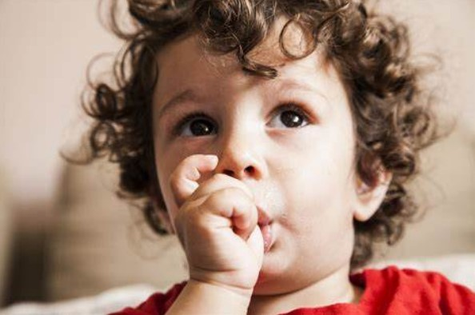
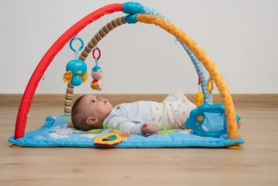
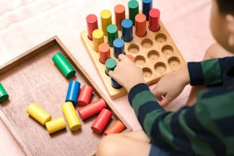
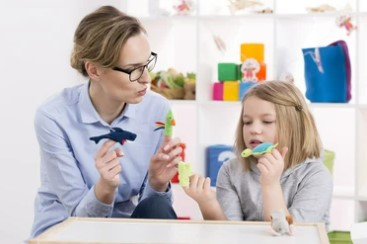

Hitos del desarrollo en infancia
Una guía útil para evaluarlos y detectar las señales de advertencia
Una guía útil para el desarrollo infantil Hitos: ¿Mis hijos están creciendo y desarrollándose para su edad? ¡Respondemos a todas tus preguntas! Conozca los hitos del desarrollo y sus subtipos, evalúe si el nivel de desarrollo de su hijo es apropiado para su edad y analice los próximos hitos que encontrará. Detectar síntomas de ansiedad, ¿qué debo hacer si se detecta un retraso en el desarrollo? ¡y más!.¿Qué son los hitos del desarrollo?
Los hitos del desarrollo son eventos clave que son comunes en la infancia. Un niño debe alcanzar hitos de desarrollo dentro de un cierto período de tiempo antes de que podamos considerar que está en el buen camino. El monitoreo regular de los recién nacidos nos permite determinar qué tan bien están creciendo los bebés en funciones básicas en función de una serie de hitos del desarrollo. Las discrepancias en los hitos del desarrollo de los niños pueden ser señales de advertencia que indiquen la necesidad de una intervención temprana. Las edades a continuación son aproximadas, suele haber un margen de tiempo tanto arriba como abajo para seguir el ritmo de la ocasión en particular.¿En qué áreas existen hitos del desarrollo?
Las áreas donde se definen los hitos del desarrollo son: habilidades motoras; cognitiva, afectiva y socialización; y lenguajeHitos del desarrollo psicomotor

La motricidad te permite comunicarte a través de la expresión a través de gestos y movimientos. Uno de sus objetivos es aumentar la autonomía, por lo que el hito más importante en su desarrollo es caminar.
Hitos del desarrollo cognitivo

Autores como Piaget establecieron tres etapas a nivel cognitivo, cada una con sus propios hitos de desarrollo: sensoriomotor (0-24 meses), operaciones concretas (2-12 años) y operaciones formales (12 años).
La primera forma en que un niño interactúa con el mundo es la reflexión. Luego realiza acciones en su propio cuerpo ("reacción cíclica primaria") y externamente ("reacción cíclica terciaria"). A partir de los 8 meses, los movimientos se vuelven conscientes, se produce el "error A-B" (al buscar objetos, el niño no tiene en cuenta el cambio de posición, aunque los ha visto cambiar). Luego, los experimentos humanos dieron lo que llamamos la "respuesta triple" (dejó caer la cuchara repetidamente para descubrir qué estaba mal, y la alegría de hacerlo) y el "error de transposición" (transposición de un objeto invisible) causó curiosidad. No me parece). Al final de esta etapa sensoriomotora, el hito de desarrollo esperado es el "simbolismo", que se entiende como "saber que un objeto existe a través de una representación mental de él" (incluso si no puedo ver "madre", sé que existe ).
La etapa de preparación para operaciones específicas se puede dividir en: operación preparatoria (2-6 años) y operación específica (6-12 años). Primero, los pensamientos son egocéntricos y prelógicos (difíciles de categorizar, materializar y preservar), y el punto de inflexión en este desarrollo es la adquisición de la "identidad". En el proceso concreto, la idea es lógica. Los puntos de corte reversibles y de desarrollo simples están "protegidos" en el siguiente orden: número y duración (7 años), número (8 años) y peso (9 años).
A partir de la adolescencia se logra la doble reversibilidad y preservación del volumen; según Piaget, el pensamiento formal se define como el último hito del desarrollo.
Hitos del desarrollo emocional y social
El desarrollo emocional depende de muchos factores, algunos de los cuales son evidentes al nacer, mientras que otros se desarrollan con el tiempo. La maduración biológica en sí hace que los bebés desarrollen emociones y sentimientos específicos que consideramos hitos del desarrollo y preocupaciones de supervivencia (por ejemplo, un bebé que llora puede significar cualquier cosa, desde hambre hasta lesiones).
Un desarrollo importante en esta área ha sido el establecimiento del apego como un comportamiento social, siendo una de las medidas más aceptadas la ansiedad por las cosas.
Hitos del desarrollo lingüístico

El lenguaje permite la transferencia de conocimientos, expresa sentimientos y apoya ideas.
Un hito fundamental en el desarrollo del lenguaje es el "simbolismo", la capacidad de conectar dos elementos sin conexión directa ("¿Por qué no llamamos a los objetos que llamamos "mesas" "sillas"?"). Además, el desarrollo de la inteligencia está relacionado con el desarrollo y adquisición del lenguaje.
Hitos del desarrollo: retraso y trastorno
Puede haber retrasos en el desarrollo o discapacidades. La diferencia entre los dos es que la secuencia retrasada de etapas de desarrollo se completa pero más lentamente. Puede afectar a una sola región, como un idioma ("cambio de idioma"), o a varias regiones del mundo.
En el caso de la enfermedad, se cambia el orden, no se observan los hitos del desarrollo o su orden. Por ejemplo, en el caso de los trastornos de la comunicación y los trastornos específicos del lenguaje, el impacto es en los trastornos del lenguaje, del movimiento, de la motricidad y del desarrollo intelectual, principalmente el desarrollo cognitivo. En las discapacidades de aprendizaje, vemos cambios en ciertas áreas como la lectura, la escritura o la aritmética. En este contexto, el lenguaje, la motricidad y la cognición están interconectados. En el autismo, el afecto está limitado en la comunicación, la interacción social y las conductas o acciones repetitivas; aunque el estado de ánimo y la cognición también se ven afectados en la mayoría de los casos.
Advertencia o señales de advertencia en los hitos del desarrollo
Como se mencionó anteriormente, existe un vínculo entre los hitos del desarrollo y algunas enfermedades específicas. Se debe prestar atención a cualquier signo de retraso en el desarrollo en cualquiera de los 4 dominios (cognitivo, lenguaje, habilidades sociales y emocionales o habilidades motoras) que suscite sospechas. Esto nos permitirá seguir más de cerca el desarrollo de los hechos e intervenir a tiempo.
Volviendo al ejemplo del autismo, una sonrisa social o intención de comunicarse (sin contacto visual, sin interés en la conversación, sin mostrarse); ausencia de juego simbólico, evitando el contacto físico o, por ejemplo, el lenguaje literal (dificultad para comprender una metáfora o un chiste...).
¿Cómo medimos los hitos del desarrollo?
Existen pruebas estandarizadas para evaluar el logro de hitos del desarrollo utilizando dos métodos: evaluación cognitiva y evaluación social. Tenemos que tener en cuenta sus capacidades, la edad del niño y el tipo de exponentes que nos pueden dar las pruebas. La motricidad y el lenguaje también fueron evaluados desde el primer método. Algunas de estas pruebas son: escala de desarrollo de Gessel, escala de Bayley, escala de Brunet-Lezine, escala de elección de Denver, escala de desarrollo de Batelle, escala de desarrollo observacional, escala de desarrollo psicológico normal del niño y batería de Piaget-Head.
El dominio social puede incluir la autonomía (Escala de Madurez Social de Vineland, Escala de Calificación del Desarrollo Psicosocial, Gráficos de Evaluación del Desarrollo Social, Sistema de Evaluación y Monitoreo de West Virginia) y habilidades sociales (Batería de Socialización, Encuesta de Habilidades Sociales y Escala Infantil y Pregunta de Comportamiento Asertivo). valorado).
¿Qué podemos hacer cuando detectamos un retraso en un hito del desarrollo?
Los hitos del desarrollo se encuentran en un intervalo que corresponde al promedio general del niño, pero se debe observar el ritmo de cada hito del desarrollo. Las recomendaciones a continuación están destinadas a promover el logro de los objetivos de desarrollo de manera integrada y deben adaptarse a la edad y circunstancias específicas de cada niño.
Trabaja la motricidad fina (dedos y manos) y la motricidad gruesa (caminar, correr, saltar), el equilibrio, la fuerza y la coordinación. El dibujo, las manualidades, los deportes y los juegos de imitación son herramientas importantes para el aprendizaje de la motricidad. El escondite, las adivinanzas, las sopas de letras, las preguntas, la lectura, la escritura, la aritmética, la comprensión y los ejercicios de suma ayudan al desarrollo cognitivo.
Es importante enseñar a los niños a reconocer las emociones, interpretarlas y asociarlas con acciones y pensamientos adecuados según la edad del niño y las circunstancias en las que se produzcan (“Estoy llorando porque estoy triste” o “Estoy feliz” ). "Por los abuelos"). Una amplia gama de emociones "expresadas" ayudará a guiar el seguimiento en casos de desregulación. Podemos identificar emociones en imágenes o videos, representar situaciones que evocan diferentes emociones a través del juego de roles o derivar emociones de las historias que leemos.
Podemos tomar acciones que reduzcan la intensidad desproporcionada como una herramienta específica hasta que aprendamos habilidades de ajuste más complejas. Las habilidades sociales, de comunicación y de resolución de problemas pueden ayudarnos a desarrollar relaciones más adaptativas y satisfactorias con nuestro entorno.
Para estudiar idiomas, la mejor manera es "hablar". Cada elemento del entorno y cada intención comunicativa (por parte del niño y de otros interlocutores) se apoya en el lenguaje, es más natural en situaciones de juego y actividades cotidianas.
Podemos utilizar canciones, sonajeros, audioteléfonos o paneles de actividades. Repite los balbuceos y las sílabas de tu bebé, míralo a los ojos, susúrrale al oído y háblale desde diferentes ángulos y posiciones. Podemos llevarnos las manos a los labios o la garganta, gesticular, hacer muecas y onomatopeyas; nombrar objetos a los que nos referimos o usar, hacer preguntas simples y repetitivas; y sosténgalo frente al espejo. También ayuda a comunicarse con otros niños de la misma edad, hablar por teléfono, dibujar y explicar sus dibujos sin interrumpirlos y reforzar las palabras correctas y espontáneas.